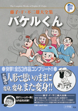

| |

＜小学二年生〜小学四年生、
別冊コロコロコミック
掲載集＞
定価：本体1,600円＋税
A5判／592ページ
好評発売中！
★は初めて単行本に収録される
作品です。
※収録内容は変更になる
場合があります。

|
お化けやしき（小二74年02月号〜03月号）
カワルがバケルに（小二74年04月号）
早がわり大いそがし（小二74年05月号）
パンダを飼いたい（小二74年06月号）
バケル一家大集合（小二74年07月号）
魔法でチンカラプイ（小二74年08月号）
びっくりプール（小二74年09月号）
ママがクマになる（小二74年10月号）
さらわれたのはだれ？（小二74年11月号）
バケルくん、サンタになる（小二74年12月号）
楽しいお正月（小二75年01月号）
人形もかぜをひく？（小二75年02月号）
透明人形（小二75年03月号）
みんなの広場をまもれ！（小三74年04月号）
★変身人形で大騒動（小三74年05月号）
ドロボウも頭に来た（小三74年06月号）
ファイターＺ（小三74年07月号）
ふろ屋で大さわぎ（小三74年08月号）
カワルを名選手に（小三74年09月号）
バケル一家のよけいなおせわ（小三74年10月号）
止まらない止まらない（小三74年11月号）
ユメ代さんけっこんして（小三74年12月号）
かげの通り魔（小三75年01月号）
底なしさいふの謎（小三75年02月号）
ゴン太、ユメ代に変身（小三75年03月号）
かけもちでお花見（小三75年04月号） |
五百万円のつぼ（小三75年05月号）
子どもはいやだ！！（小三75年06月号）
バケタ屋開店（小三75年07月号）
宇宙旅行（小三75年08月号）
ゆうれいくんがんばって（小三75年09月号）
おたがいに大変だ（小三75年10月号）
ゴキブリラーメン（小三75年11月号）
怪人五十面相（小三75年12月号）
こまったニャア（小三76年01月号）
はつゆめに白雪姫を（小三76年02月号）
カワルついに正選手に（小三76年03月号）
二人で散歩を（小四75年04月号）
パパとママが離婚する！（小四75年05月号）
ゴン太のガールフレンド（小四75年06月号）
大まんが家カワル先生（小四75年07月号）
一日ゴン太（小四75年08月号）
カワルが二人に…！？（小四75年10月号）
この問題とける？（小四75年11月号）
サンタのおくりもの（小四75年12月号）
なぐり屋が来た（小四76年01月号）
お医者人形（小四76年02月号）
コピー人形（小四76年03月号）
ゴン太のライバル（別冊コロコロ 84年07月号）
タレントは大いそがし（別冊コロコロ 84年08月号）
ユミちゃんとデート（別冊コロコロ 84年09月号）
二人が同時に生きられたら（別冊コロコロ 84年10月号） |